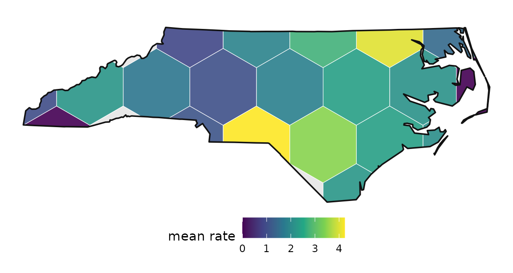
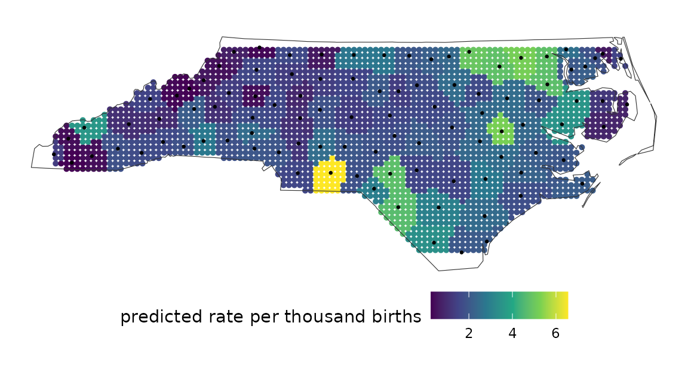

spatialkit draws cells from the distribution of the observations, summarises the observations onto them with standard errors, and scores models on folds that hold out whole blocks of the map. The home page says more about why the package exists.
This article is the short path, from installing the package to a map
of a model’s predictions, on the North Carolina counties that ship with
sf. vignette("spatialkit_nc_demo") runs the
same steps at length on a simulated field, and
vignette("glossary") defines the terms used here.
This article needs three optional packages: ggplot2
for the maps, ranger for the model steps and
gstat for the block size from the data. Where one is
missing, the code that needs it is shown but not run.
Installing
install.packages("spatialkit")The development version installs from GitHub:
# install.packages("remotes")
remotes::install_github("elkronos/gis_modeling_toolkit")Add build_vignettes = TRUE to that call to install these
articles with it; building them needs pandoc.
Optional packages
sf, dplyr, logger,
digest and FNN install with spatialkit. The
packages below are optional; each is needed only for the functions in
its row.
| install | for |
|---|---|
gstat |
variogram fitting: estimate_sac_range(),
make_folds(auto_range = TRUE), design effects from a
variogram, kriging_adequacy()
|
ranger |
fit_rf_model() and cv_rf()
|
sp |
fit_gwr_model(), cv_gwr(),
gwr_model_selection() and
compare_models_cv(models = "GWR")
|
brms |
fit_bayesian_spatial_model() and
cv_bayes(); it brings rstan and
loo
|
cmdstanr |
CmdStan as the Stan backend for brms (see below) |
geometry |
Delaunay triangle tessellations |
ggplot2 |
every plot_*() function and every plot()
method |
patchwork |
the stacked panels in vignette("spatialkit_nc_demo")
and example_nc_demo.R
|
Matrix |
sparse k-nearest-neighbour weights for Moran’s I on large layers |
nlme |
REML detrending in estimate_sac_range()
|
tibble |
make_folds() returns its assignment table
as a tibble instead of a data frame |
knitr, rmarkdown
|
building these articles |
GWmodel, spdep, testthat,
units, vctrs, withr
|
the test suite only |
A call that needs a missing package names it, either in an error that
stops the call or, where the call can go on without the feature, in the
log, as estimate_sac_range() does when it returns
NA without gstat.
The Bayesian backend compiles a Stan model for each fit, so it needs
a C++ toolchain as well as brms. brms always
brings rstan. cmdstanr installs from https://stan-dev.r-universe.dev, and
cmdstanr::install_cmdstan() builds CmdStan; once a CmdStan
build is available,
fit_bayesian_spatial_model(backend = "auto") uses it, and
otherwise it uses rstan.
Getting your data in
Data usually arrive as a spatial file or as a table with coordinate
columns. Either way, the next steps need an sf layer of
POINTs in a projected CRS.
A spatial file
library(sf)
library(spatialkit)
nc <- st_read(system.file("shape/nc.shp", package = "sf"), quiet = TRUE)
c(features = nrow(nc), geometry = as.character(unique(st_geometry_type(nc))))## features geometry
## "100" "MULTIPOLYGON"Those are polygons, and every model here takes points, so reduce
them. coerce_to_points() maps a polygon to a point
guaranteed to fall inside it, using st_point_on_surface(),
a line to its midpoint, and a MULTIPOINT to its centroid. Attribute
columns come along.
counties <- ensure_projected(nc[, c("BIR74", "SID74", "NWBIR74")])
obs <- coerce_to_points(counties)
obs$rate <- 1000 * obs$SID74 / pmax(obs$BIR74, 1) # the response
obs$nw_share <- obs$NWBIR74 / pmax(obs$BIR74, 1) # one predictor
c(points = nrow(obs), geometry = as.character(unique(st_geometry_type(obs))))## points geometry
## "100" "POINT"Every function from here on names the response and the predictors by
their column names, as strings: response_var = "rate",
predictor_vars = "nw_share". fit_rf_model()
and fit_gwr_model() need a numeric response and stop with
an error on a logical, factor or character one; cv_rf()
reports that error as the reason every fold failed.
summarize_by_cell() warns and leaves such a column out.
resolution_profile() takes a numeric or logical response.
fit_bayesian_spatial_model() takes a logical or 0/1
response under a family such as brms::bernoulli(), and a
factor or character one under brms::categorical() or an
ordinal family.
Hex and square grids need a study area. Here it is the union of the
counties; an outline read with st_read() serves as
well.
A table with coordinate columns
Here the table is made from the county points so that the example
runs. With your own file, read it with read.csv().
ll <- st_coordinates(st_transform(obs, 4326))
tab <- data.frame(lon = ll[, 1], lat = ll[, 2],
births = obs$BIR74, sids = obs$SID74)
head(tab, 2)## lon lat births sids
## 1 -81.49692 36.41746 1091 1
## 2 -81.12964 36.47430 487 0
pts_ll <- st_as_sf(tab, coords = c("lon", "lat"), crs = 4326)
pts <- ensure_projected(pts_ll)Pass crs = yourself. st_as_sf() does not
guess it, and the package’s fallback for a layer with no CRS (below)
recognises only lon/lat. Lon/lat from a GPS, a web API or a geocoder is
almost always EPSG:4326. A file from a municipal or national dataset
names its CRS in its metadata, and that CRS is often a projected
one.
A table has no polygons to dissolve into a study area. Read an
outline if you have one. Otherwise clip_target_for(),
called on the points, returns their bounding box, grown by
expand, in the projected CRS the points are in or are moved
into. The corners of a box hold no data, so a hex or square grid over it
has cells with no points in them.
The rest of this article carries on with obs, the county
points.
Missing values and repeated locations
A row whose response or predictor is NA,
NaN or infinite is dropped before a fit, with a warning
that gives the counts (class spatialkit_rows_dropped).
prep_model_data() does the dropping, and
attr(x, "dropped") says which rows went.
Two observations at the same coordinates are fine for models and folds. A Voronoi tessellation keeps one seed per location, and every point at that location is indexed to its cell.
Coordinates and distance units
Every distance in this package is in the units of the CRS the
analysis runs in. A block size, a GWR bandwidth, a variogram range and a
Gaussian process length-scale are all distances. Give any of them a
number in degrees when the data are in metres and the result is wrong by
a factor of about 100,000. make_folds() stops with an error
that names the CRS’s unit when a block size would build a grid of more
than 1,000,000 blocks.
ensure_projected() moves lon/lat data into a projected
CRS chosen for their extent. nc.shp arrives in NAD27, a
geographic CRS in degrees, and ensure_projected() compared
three candidates for the counties, which
attr(counties, "crs_choice") holds:
choice <- attr(counties, "crs_choice")
print(data.frame(name = choice$name,
error_percent = round(100 * choice$distance_error, 2),
chosen = choice$chosen), row.names = FALSE)## name error_percent chosen
## UTM zone 17 0.21 FALSE
## Lambert azimuthal equal-area centred on (-79.4, 35.6) 0.04 FALSE
## Albers equal-area (lat_1=34.3, lat_2=36.1, lon_0=-79.4) 0.01 TRUE
st_crs(counties)$units_gdal## [1] "metre"It chose a local Albers equal-area projection and logged why: across
this extent the UTM zone distorts distances by 0.21 percent at worst and
the Albers projection by 0.01 percent. Pass target_crs to
override the choice.
The package writes decisions like this one to the console as
WARN log lines, which this article leaves out.
spatialkit_quiet() turns them off, and
?"spatialkit-conditions" says how a log line differs from
an R warning.
Areas need an equal-area CRS. For lon/lat data,
ensure_projected(purpose = "area") chooses among equal-area
projections only, and summarize_by_cell(area = TRUE) stops
with an error when the cells’ CRS distorts areas across them by more
than 1 percent.
A layer with no CRS at all is read by a documented rule. If the bounding box fits the lon/lat envelope and the coordinates look like degrees, the layer is read as EPSG:4326 and projected, with a warning saying so. Set the CRS yourself if your data are planar and happen to fall in that envelope.
raw <- st_as_sf(data.frame(lon = c(-81.5, -81.1), lat = c(36.4, 36.5)),
coords = c("lon", "lat"))
st_crs(ensure_projected(raw))$input## Warning: ensure_projected(): CRS is missing; assuming EPSG:4326 because bbox
## looks like lon/lat (xmin=-81.50, xmax=-81.10, ymin=36.40, ymax=36.50). Set CRS
## explicitly to suppress this warning.## [1] "EPSG:32617"Two layers that must line up go through harmonize_crs(),
which returns both in a common CRS:
pair <- harmonize_crs(obs[1:5, ], st_transform(boundary, 4326))
st_crs(pair$a) == st_crs(pair$b)## [1] TRUEYou do not have to project first. Every function that measures a
distance (make_folds(), the fit_*() and
cv_*() functions, predict_surface()) calls
ensure_projected() on what it is given, so a lon/lat layer
is projected on the way in and the same choice is logged. Calling it
yourself, as above, means the choice is made once and you can see
it.
From points to a map
The calls below take the points to a scored model and a map of its predictions. The first four draw cells and summarise the observations onto them; the rest fit a model on the points, score it on folds that hold out whole blocks, and mark where its predictions apply.
Cells and their values
# Choose the number of cells.
n_cells <- select_resolution(resolution_profile(obs, "rate"))
# Draw hex cells over the state.
tess <- build_tessellation(obs, boundary = boundary, method = "hex",
approx_n_cells = n_cells, quiet = TRUE)
# Put each observation in a cell.
asg <- assign_features_to_polygons(obs, tess$cells)
# Summarise each cell; cells_sf attaches the geometry so the result maps.
cells <- summarize_by_cell(asg, "rate", cells_sf = tess$cells)
c(asked = n_cells$best, drawn = nrow(tess$cells))## asked drawn
## 22 23resolution_profile() sets a size of 4.5 observations per
cell by default, and select_resolution() turns it into a
count of 22 cells. The hex grid clipped to the state outline has 23. Of
these, 3 hold no county. They are pieces cut off at the state’s edge, of
380, 790 and 870 square kilometres, against 957 to 11,494 for the cells
that hold a county. vignette("resolution") explains the
size and the other ways to choose a count, among them
determine_optimal_levels(), which reads one off the
clustering of the coordinates.
An observation outside the boundary gets no cell.
assign_features_to_polygons() leaves it out, with a warning
of class spatialkit_unassigned that gives the count, unless
you pass keep_unassigned = TRUE.
names(cells)## [1] "poly_id" "n"
## [3] "resp_mean_rate" "..sd_resp_rate"
## [5] "..se_resp_rate" "cell_weight"
## [7] "..pooled_resp_rate" "..pooled_w_resp_rate"
## [9] "..pooled_target_resp_rate" "geometry"
head(st_drop_geometry(cells)[, c("poly_id", "n", "resp_mean_rate",
"..se_resp_rate", "..pooled_resp_rate")], 4)## poly_id n resp_mean_rate ..se_resp_rate ..pooled_resp_rate
## 1 1 2 0.9737098 0.9737098 1.443935
## 2 2 2 0.0000000 0.0000000 1.156131
## 3 3 7 2.2077319 0.4412724 1.960233
## 4 4 NA NA NA NAEach row holds the count n, the cell’s mean
resp_mean_rate and its standard error
..se_resp_rate. A cell with one observation has a standard
error of NA, and a cell with none has n = NA;
both rows are kept, so the layer has one row per cell.
cell_weight is the cell’s effective sample size, which
equals n here, with no design effect and no missing rates;
pass it as the weights of a regression on cell values.
..pooled_resp_rate is the pooled value: the cell’s mean
pulled toward the mean of the observations in the 8 nearest cells
(nearest by the centroid of their observations), by a weight that grows
with the cell’s count. ..pooled_w_resp_rate holds that
weight and ..pooled_target_resp_rate the mean it pulls
toward. vignette("cells") explains every column, when to
widen the standard error with a design effect
(deff), and the warnings summarize_by_cell()
gives about pooled values.
plot_tessellation_map(cells, boundary = boundary, fill_col = "resp_mean_rate",
legend_title = "mean rate") +
ggplot2::theme(legend.position = "bottom")
Cells or points?
The calls so far give the value of each cell. The model in the next
calls is fitted on the points, which gives it 100 observations against
20 cell means. Fit on cells when the cells are the unit you will report
or act on, when the point-level data cannot leave the building, or when
the points are so dense that the cell means are what the model should
see. Either way the folds come from the points’ locations, and the cells
can serve as the blocks that define them
(make_folds(blocks = tess$cells)).
A model, scored on held-out blocks
# Build random folds and folds that hold out whole blocks.
random <- make_folds(obs, k = 4, method = "random_kfold", seed = 1)
blocked <- make_folds(obs, k = 4, method = "block_kfold", block_size = 100e3,
seed = 1)
c(folds = blocked$k, blocks = blocked$params$blocks_used,
block_width_km = round(blocked$params$block_width / 1e3))## folds blocks block_width_km
## 4 14 106block_size is a distance in the CRS’s units, here
metres, and it sets the smallest edge of a block. The blocks built here
are 106 km wide. The wider the blocks, the farther the held-out points
sit from their training data, and the score is the error at that
distance. This article sets 100 km by hand. That is about 3 counties
across (the state’s area divided among its 100 counties gives squares 36
km on a side), and it gives 14 blocks for the four folds.
vignette("spatial-cross-validation") is about choosing the
size.
make_folds(auto_range = TRUE) sizes the blocks from the
autocorrelation range of what the predictors leave unexplained, when
gstat is installed. A variogram needs at least thirty
points, and below that estimate_sac_range() returns
NA and says so. On these counties no range is found, and
the call falls back to geometric blocks, with a warning:
auto <- make_folds(obs, k = 4, method = "block_kfold", auto_range = TRUE,
response_var = "rate", predictor_vars = "nw_share", seed = 1)## Warning: make_folds(block_kfold): auto_range = TRUE, but no autocorrelation
## range was identified (no spatial structure detected at the nearest-neighbour
## scale); falling back to geometric blocks, which are not sized from the data.
## See ?estimate_sac_range, or pass `block_size`.
# Fit and score a random forest on each set of folds.
cv_random <- cv_rf(obs, "rate", "nw_share", folds = random,
num_trees = 300, seed = 1)
cv_blocked <- cv_rf(obs, "rate", "nw_share", folds = blocked,
num_trees = 300, seed = 1)
rbind(random = cv_random$overall[, c("RMSE", "MAE", "R2")],
blocked = cv_blocked$overall[, c("RMSE", "MAE", "R2")])## RMSE MAE R2
## random 1.604483 1.120585 -0.04952951
## blocked 1.365868 1.056827 0.29493961cv_rf() fits a random forest inside every fold and pools
the held-out predictions. The pooled score hides how much the folds
disagree, so look at the range of the per-fold RMSE too:
## [,1] [,2]
## random 1.0390731 2.189466
## blocked 0.9565161 1.935064The two pooled RMSEs differ by less than the folds do. The random folds’ RMSE runs from 1.04 to 2.19 and the blocked folds’ from 0.96 to 1.94.
R² is -0.05 under random folds and 0.29 under blocked ones. Fold by
fold it runs from -0.22 to 0.30 under random folds and from 0.16 to 0.39
under blocked ones, so four folds of a hundred counties do not tell the
two schemes apart. R² here is taken about each fold’s training mean
(?cv_spatial), and on blocks that mean can sit far from the
held-out values, so a blocked R² above 0 does not show that the
predictor does better than the mean of the nearby counties.
The gap between the schemes opens when a model can use its neighbours’ values, through the coordinates or a spatially smooth predictor. The quick start on the home page shows it on a simulated field.
cv_gwr() and cv_bayes() are the same call
for the other two backends, and cv_spatial() takes any
learner you write. compare_models_cv() runs the backends on
the same folds and puts them in one table.
A surface, and where it applies
# Predict on a grid over the state, and mark where the model extrapolates.
fit <- fit_rf_model(obs, "rate", "nw_share", num_trees = 300, seed = 1)
surf <- predict_surface(fit, n_cells = 4000, covariates = obs,
boundary = boundary)
aoa <- area_of_applicability(surf, model = fit, folds = blocked)
aoa## Area of applicability (Meyer & Pebesma 2021)
##
## predictors : 1 (nw_share)
## weighted : no (all predictors count equally: the model has no out-of-bag skill (OOB R-squared -0.059), so its importances are noise)
## training : 100 points
## reference : nearest point outside each of 4 CV folds (block_kfold)
## normaliser : 1.1527 (mean pairwise distance)
## threshold : 0.0440 (outlier-removed max of training DI)
## location : not measured
##
## 2454 of 2454 prediction points inside the AOA (100.0%)The forest’s out-of-bag R², in the print above, is -0.06. Fitted on all hundred counties, the share of non-white births predicts the SIDS rate no better than the mean rate does.
predict_surface() returns the grid as points, one per
grid node, each carrying its predictor value from the nearest county.
n_cells = 4000 sets the grid spacing over the state’s
bounding box, and boundary drops the nodes outside the
state, which leaves 2,454. The area of applicability compares each grid
point’s predictors with the training data. With
folds = blocked it sets its threshold from the same folds
as the score.
library(ggplot2)
ggplot() +
geom_sf(data = surf, aes(colour = .pred), size = 1.1) +
geom_sf(data = boundary, fill = NA, colour = "grey20") +
geom_sf(data = obs, size = 0.5, colour = "black") +
scale_colour_viridis_c(name = "predicted rate per thousand births") +
theme_void() +
theme(legend.position = "bottom")
All 2,454 grid points are inside the area of applicability here, because the grid took its predictor from the nearest county, so no grid point holds a value the model has not seen.
When the predictors come from another source, such as a covariate
raster converted to sf points and passed as
grid or covariates, this check marks the parts
of the map where the model extrapolates.
Scripts you can run
Ten numbered scripts, 01 to 10, install
with the package. Each prints what it is doing and says what to look for
before it draws a figure. They use a simulated field with known
structure, so you can check each diagnostic against the truth.
dir <- system.file("scripts", package = "spatialkit")
list.files(dir)
source(file.path(dir, "03-folds.R")) # one topic
source(file.path(dir, "00-run-all.R")) # all ten, in order| script | topic | needs, beyond ggplot2
|
|---|---|---|
01-tessellations.R |
Voronoi, hex, square and Delaunay cells, and what seeding changes |
geometry for the Delaunay part |
02-resolution.R |
the autocorrelation range, the ladder of counts, the criteria that disagree, choosing the count on half the data, and the default size | gstat |
03-folds.R |
random against blocked folds, plus buffered leave-one-out and NNDM |
gstat, to size blocks from the range |
04-block-size.R |
sweeping the block size, and the two shapes the curve takes |
gstat, for the range marker |
05-fit-diagnose.R |
wrapping your own model, residual autocorrelation, cell means |
gstat, for the residual variogram and the kriging
check |
06-cv-compare.R |
comparing models fold by fold on one set of folds |
ranger, sp or both, for the backend
comparison |
07-surface-aoa.R |
predicting onto a grid, and the area of applicability |
stars for the GeoTIFF export; stars is not
among spatialkit’s Suggests |
08-feature-select.R |
forward selection, and measuring the selection effect | |
09-gwr.R |
GWR coefficients that vary over space | sp |
10-bayes.R |
a Bayesian GP, and how often its prediction intervals cover the held-out values |
brms and a Stan toolchain |
The figures need ggplot2. When a script lacks a package
it skips the part that needs it, or the whole script for 02, 09 and 10,
with a message naming the package. In an interactive session each script
pauses at [enter] between figures;
Sys.setenv(SPATIALKIT_TOUR_PAUSE = "no") turns the pauses
off. 00-run-all.R turns them off itself, and most of its
running time is script 10, which compiles a Stan model for each fit. Set
SPATIALKIT_TOUR_OUTPUT to a folder to write the figures
there instead of drawing them.
example_nc_demo.R in the same folder is the runnable
version of vignette("spatialkit_nc_demo"). It writes its
figures to the folder named by SPATIALKIT_DEMO_OUTPUT, or
to a temporary folder whose path it prints.
Next
vignette("resolution") comes next: how many cells the
data support, and how to pass that count to the tessellation. The help
pages behind this article are ?ensure_projected,
?coerce_to_points, ?resolution_profile,
?select_resolution, ?build_tessellation,
?assign_features_to_polygons,
?summarize_by_cell, ?make_folds,
?cv_rf, ?predict_surface and
?area_of_applicability. ?spatialkit lists
every step of the pipeline with its functions.